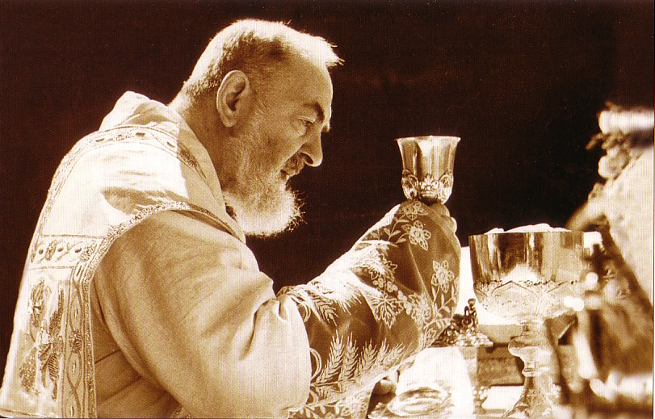
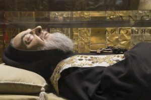

Quem são os Santos?
Os Santos são pessoas que viveram de acordo com os ensinamentos de Jesus Cristo e são reconhecidos pela Igreja Católica por suas virtudes e santidade.
Na Tradição Católica, os Santos são intercessores junto a Deus e são celebrados em diversas festas ao longo do ano litúrgico.
Alguns dos santos mais conhecidos incluem São Francisco de Assis, Santa Teresa de Ávila, São João Paulo II, entre outros.
A canonização é o processo pelo qual a Igreja reconhece oficialmente uma pessoa como Santa, declarando que ela está no céu e pode interceder por nós.
Além disso, os Santos são exemplos de vida cristã e inspiram os fiéis a seguir o caminho da santidade. Por isso, muitos católicos recorrem à intercessão dos Santos em suas orações, pedindo ajuda e orientação em suas vidas diárias.
A história que será contada hoje, é a de São Padre Pio.
São Padre Pio
São Padre Pio, nascido Francesco Forgione, foi um sacerdote capuchinho italiano conhecido por suas estigmas e dons místicos. Ele nasceu em 25 de maio de 1887 e faleceu em 23 de setembro de 1968.
Padre Pio é famoso por suas experiências místicas, incluindo visões, bilocação e a capacidade de ler os corações das pessoas. Ele passou grande parte de sua vida no convento de San Giovanni Rotondo, onde atendia confissões e realizava missas.
Ele foi canonizado pelo Papa João Paulo II em 16 de junho de 2002. Sua festa é celebrada no dia 23 de setembro.
Padre Pio é um exemplo de fé, humildade e devoção a Deus. Ele dedicou sua vida ao serviço dos outros, especialmente aos doentes e necessitados.
Hoje, muitos fiéis recorrem à sua intercessão em busca de cura e conforto espiritual.
Entre os tantos relatos de bilocação, há o contado por Dom Luigi Orione também proclamado recentemente santo. Santo Orione contou que em 1925, sendo um dos tantos devotos de Santa Teresa de Lisieux, encontrava-se na praça de São Pedro para as celebrações em honra da mística francesa quando apareceu inesperadamente em sua frente Padre Pio.
Todavia, segundo o relato de muitas pessoas, Pio nunca saiu do convento onde viveu de 1918 até sua morte.
São Padre Pio é um símbolo de esperança e fé para milhões de católicos ao redor do mundo.

O corpo incorrupto de Padre Pio exposto para veneração pública.
O corpo de Padre Pio foi exumado a 20 de abril de 2008 e colocado em exposição pública na cripta da Igreja de Santa Maria das Graças, em San Giovanni Rotondo, como parte das comemorações dos 40 anos do seu falecimento.
No dia 19 de abril de 2010, aconteceu a transladação da urna com as relíquias (corpo intacto) de São Pio de Pietrelcina da cripta do Santuário “Nossa Senhora das Graças” para a Igreja dedicada ao santo capuchinho.
De acordo com o arcebispo, a transladação foi decidida “respeitando o tradicional culto das relíquias que caracteriza a devoção dos fiéis desde os primeiros séculos da história da Igreja e será realizada respeitando as normas canônicas”. O lugar onde será colocado o corpo de São Pio de Pietrelcina – explica Dom Castoro – “permitirá a muitos peregrinos deterem-se em oração em um lugar mais amplo, mais acolhedor e rico em ocasiões de reflexão para um maior fortalecimento espiritual.
O ambiente é constituído por mosaicos realizados pelo jesuíta Marko Ivan Rupnik”.
Se você deseja saber mais sobre a vida e os ensinamentos de São Padre Pio, visite o site oficial da sua fundação ou procure livros e documentários sobre ele.
Que a intercessão de São Padre Pio nos ajude a viver com mais amor e fé em nossas vidas diárias. Visite o link clicando aqui!